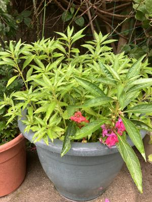

うるがいの話 ある日
最新: ギターコードの設定【うるがいの話 ある日】とは 一日だけのプログです
『うるがいの話』の最新一日だけのプログで、通信料が少なく経済的だ。カニの画像をクリックすると全ての日付が載る『うるがいの話』サイトを表示します
|
|
【うるがいの話】 うるがい(ｳﾙｶﾞｲ urugai)とは、『もずくがに』の名前でとても大きくなります。 |
|---|---|
|
|
【カミマヤーの話】 猫のことを方言でマヤーといいます。カミマヤー（kamimayaa）とは、神の猫のことです。 |
|
【たながぁの音楽】 たながぁ（ﾀﾅｶﾞｰ tanagaa）とは手長えびのことで、何種類かあり大きいのは車 エビぐらいになります。 |

|
【ぶながぁの話】 ぶながぁ(ﾌﾞﾅｶﾞｰ bunagaa)とは、赤い髪の毛、赤い身体、そして身長は１ｍ２０ｃｍ ぐらい、川の蟹を食べているの目撃された。場所は沖縄県国頭郡大宜味村のと ある村僕の隣近所に住んでいる爺さんから、聞いた話です。 |
|
|
【ギーマの話】 ギーマ(giima)とは、山原の里山に咲くスズランに似た、 花を付けます。実は食べられます、 気が付くと口の周りが紫になっています。 |
2025年05月05日 (月）ギターコードの設定
16:20
３月３０日ネットフリックスでドラマ『不適切にもほどがある！』
をみる、その中でノリのいい曲が流れていた。曲を調べるとクィー
ンの『Ａｌｌ Ｙｏｕ Ｎｅｅｄ Ｉｓ Ｌｏｖｅ』。フムフム、
ネットで楽譜データのネタを検索する。その中にｍｉｄｉデータが
あったのでそれをベースとして、動画の楽譜データを作成する。
メロディーは同じだけど、拍子が３／４，６／８、１２／８など、
・・・・、仕掛りから一カ月過ぎても、完成しない。途中、できる
かしらと不安になる（無駄なことをしているかもと）。昨日なんと
か、楽譜データはできたもののギターのコードが、ネタ不足で不完
全である。諦めようかと思ったが、納期もないし（暇人だし）と頑
張ることにした。
前から利用している、ギターのコード解析をしてくれるＷａｖｅＴ
ｏｎｅ（無料）を、上手く使って完成！。完成して良かったぜ。演
奏は百パーセントではないが、マ、いいかとちなみにギターのコー
ドは、実際にギターを演奏して確認している、三線はやらないが。
一か月もかけて出来たのはこれ。演奏がとても長い
『クイーン 愛にすべて』
５分２６秒
https://youtu.be/Y-lfqzX70Yg
鉢いっぱいに鳳仙花の芽が出た、密集してどうなるかと思うたが。
４月２２日（月）

４月３０日（水）
５月０４日（日）